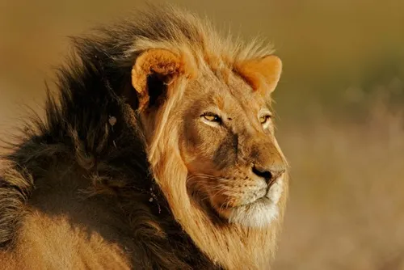
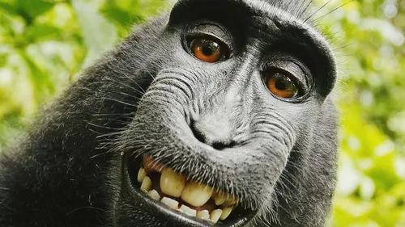
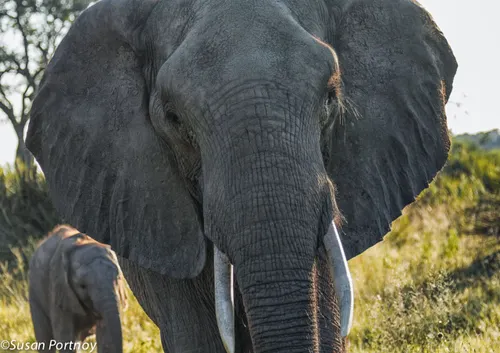

Zivotinje

Lav je simbol snage i hrabrosti. Prepoznatljiv je po svojoj raskošnoj grivi koju nose samo mužjaci.
Ovi društveni mačkovi žive u čoporima zvanim prideovi
i većinu dana provode odmarajući se u hladu, dok lov prepuštaju vještim lavicama. Njihova rika čuje se nekoliko kilometara daleko!

Majmuni su izuzetno inteligentni, znatiželjni i okretni. Žive u velikim društvenim skupinama i neprestano komuniciraju različitim
zvukovima, gestama i izrazima lica. Obožavaju se penjati, skakati s grane na granu i koristiti jednostavne alate, poput kamenja za razbijanje
oraha. Njihova ludorija nikoga ne ostavlja ravnodušnim!

Slonovi su poznati po izvrsnom pamćenju, inteligenciji i snažnoj obiteljskoj povezanosti.
Njihova surla nije samo nos, već i ruka - njome piju, dižu teške terete i mažu se blatom radi zaštite od sunca.
Ženke i mladunci žive zajedno u krdima koja vodi najstarija i najiskusnija ženka - matrijarh.